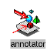
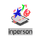

Mindshare Collaborative Software er et miljø for enkelt å kunne samarbeide over nettet, og består av de følgende applikasjoner :
Indigo Magic desktop er et brukergrensesnitt som er et ikon-orientert grensesnitt til operativsystemet. Brukere kan starte applikasjoner og velge filer ved å benytte ikoner i steden for Unix kommandoer. Du kan integrere din egen applikasjon til Indigo Magic og oppnå disse fordelene.
Indigo Magic har mange funksjonaliteter, blant annet :

IRIS AnnotatorPå et 2D bilde kan du tegne en pil for å tiltrekke oppmerksomhet mot et spesielt element i bildet. I tilleg til pilen, kan du skrive noen ord som kommenterer dette elementet. IRIS Annotator gir deg muligheten til å kommentere 3D modeller på nesten samme mate. Men du er ikke begrenset av kun tekst. Detaljene i 3D modellen kan kommenteres med lyd, bilder, video, andre 3D modeller m.m.
Dette programmet er en fin måte å formidle kommentarer på et produkt som er under utvikling, og beskrive allerede eksisterende produkter, og benyttes som et opplærings verktøy eller dokumentasjon. Det er veldig enkelt å lage markørene (piler eller punkter) og hekte informasjon/kommentarer til disse. Du kan bestemme oppførselen til denne informasjonen/kommentarer.
Showcase er en integrert tegne og presentsjons applikasjon. Den gir deg de verktøy du trenger for å lage enkle tegninger, bilder, 3D modeller og masse mer. Showcase inneholder blant annet:
Showcase er en objektorientert applikasjon. Dette betyr:

InPersonInPerson er et videokonferansesystem for WAN eller LAN. Du kan dele video, lyd, bilder, tekst og 3D-objekter på en lett og elegant måte. InPerson kan derfor brukes som et konferansesystem med flere deltakere, som en videotelefon eller som en "shared whiteboard". InPerson kan benyttes over Ethernet, Fiber, ATM eller ISDN medflere forskjellige kompresjonsalgoritmer, hvor H.261 er den mest kjente.
InPerson er tilgjengelig på flere plattformer, bl.a. Windows, Sun, HP osv.
Media Mail er en en brukervennlig mail-applikasjon som er MIME kompatibel. Den inneholder funksjoner som mapper og postadministrasjon, samt gir deg muligheten til å søke og sortere blant informasjonen.
Enkle verktøy gir deg mulighet til å legge inn video, bilde og lyd direkte fra det digitale kameraet eller mikrofonen. Man kan også dra inn eksisterende filer inn i mailen slik at disse blir bilag (attachments) til mailen. Mottakeren kan enkelt åpne disse bilagene siden disse vises som ikoner, som man klikker på.
Oppdatert, 6. juni 1995